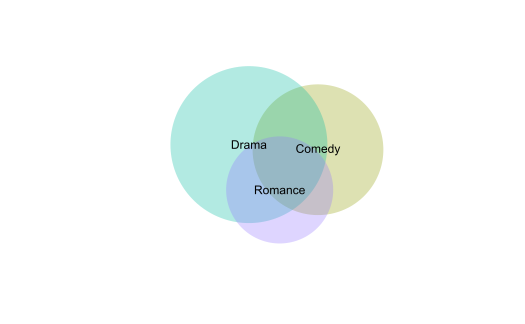

Package Website: https://natbprice.github.io/radsets/
Source Code: https://github.com/natbprice/radsets
Problem
The radsets package is a solution to the problem of how to visualize large overlapping sets. In particular, when analyzing data with many overlapping sets it is difficult to draw insight from a Venn diagram. Moreover, it may be impossible to draw a Venn diagram that accurately reflects the size of set intersections.
The solution implemented in the radsets package is a based on Radial Sets diagrams (see references). Radial Sets diagrams are an interactive, network-based visualization for the analysis of ovarlapping sets.
MovieLens Example
The MovieLens dataset includes 19 genre attributes for 27,000 movies.
Radial Sets Diagram
A Radial Sets diagram created with the radsets package is shown below.
The width of the links indicate the percent overlap (normalized by union) between each movie genre. The link color indicates the relative difference between the observed overlap and the expected overlap assuming marginal independence. The link color palette is diverging blue to red with red indicating overlaps that are larger than expected.
The size of the sections on the circumference are drawn to scale based on the size of each set (i.e., the number of items in each set regardless of overlap). However, since the sets overlap the section sizes can not be interpreted as a donut chart or pie chart. The set locations on the circumference have been optimized to place similar sets closer together, thereby minimizing length of thickest links.
The bars in each sector indicate the number of items unique to each set, shared with one other set, shared with two other sets, or shared with three or more other sets.

In the diagram below, we focus on the crime genre. The links are now directional originating from the crime set and link thickness indicates the percent of crime movies that belong to the other genres.

Venn Euler Diagram
Radial sets are useful for visualizing relationships among variables which have many features in common. When the number of variables is small, simple venn diagrams can be useful. However, when the number of pairwise interactions is high, identifying patterns may be too difficult using simple visualizations. Moreover, it may not be possible to draw a venn diagam that accurately represents the overlap between sets. Here we use the venneuler package to illustrate the problem with using Venn diagrams when we are interested in many overlapping sets.


References
Radial Sets diagrams were originally proposed by Alsallakh, Aigner, Miksch, and Hauser. The radsets package is unaffiliated with these researchers and the visualizations produced differ slightly from the original design.
Alsallakh, B., Aigner, W., Miksch, S., & Hauser, H. (2013). Radial sets: Interactive visual analysis of large overlapping sets. IEEE Transactions on Visualization and Computer Graphics, 19(12), 2496–2505. Retrieved from http://ieeexplore.ieee.org/abstract/document/6634104/